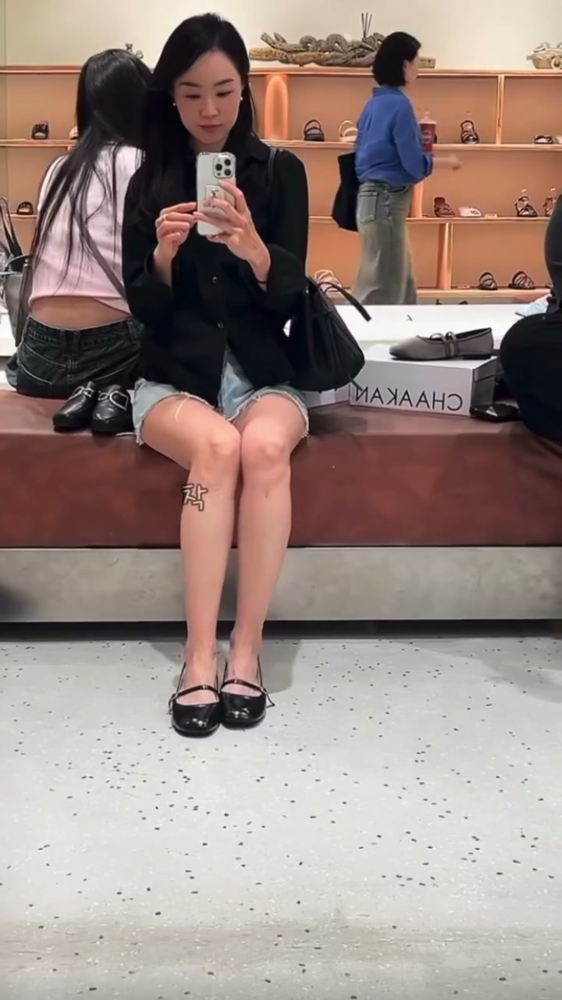
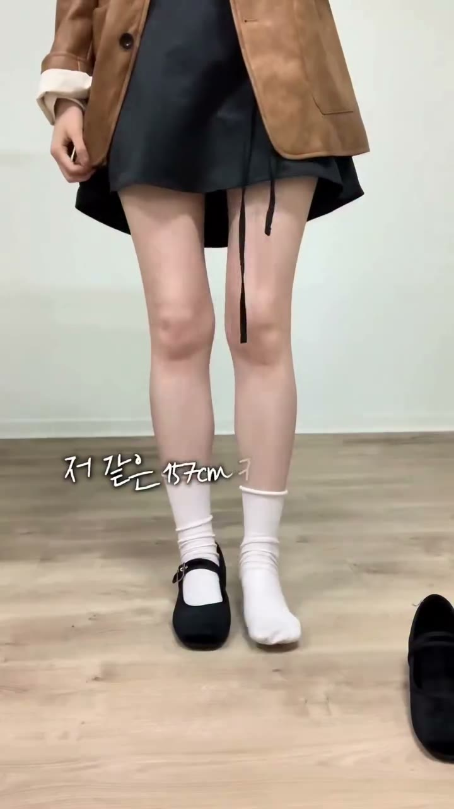
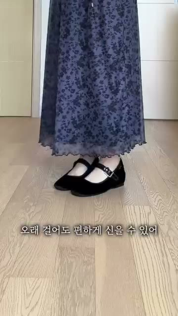
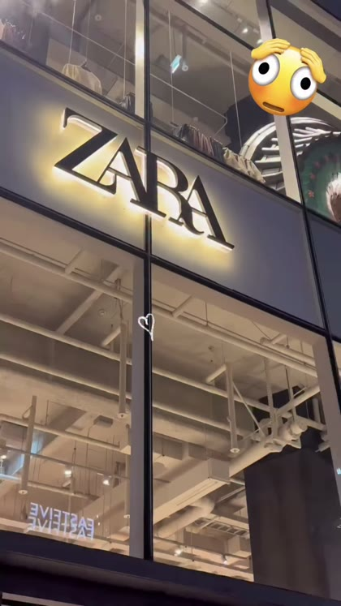
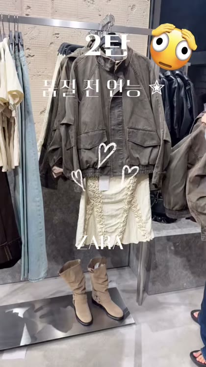
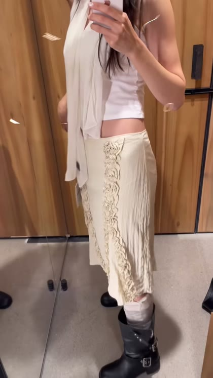
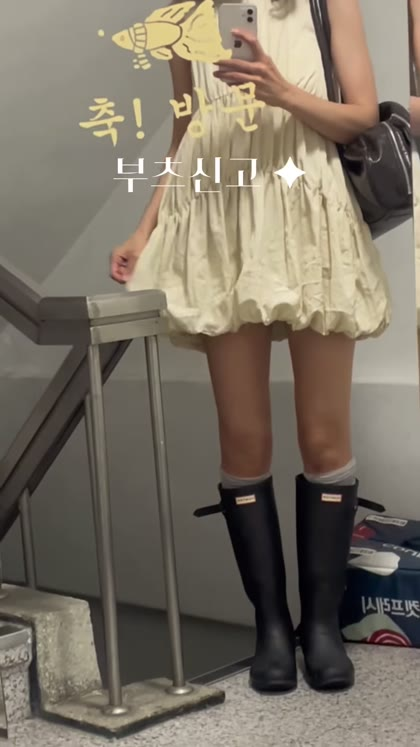
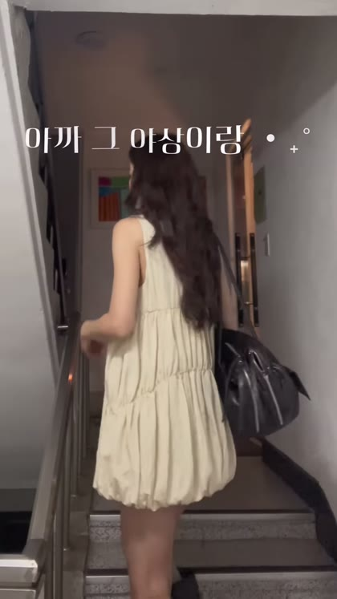
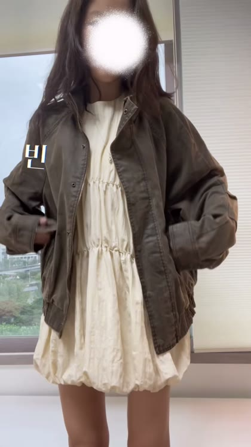

착한구두 촬영 폼 가이드
매장과 신발을 한 편에 동시에 보여주는 폼을 모은 문서입니다. 캠페인마다 아래 폼 중 하나를 골라 쓰고, 매장·제품·일정만 갈아 끼웁니다.
- 공통 원칙 4가지와 신발 컷 4종을 먼저 봅니다. 이건 폼과 무관하게 항상 같습니다.
- 캠페인 목적에 맞는 폼 A 또는 B를 고릅니다.
- 맨 아래 채워 넣는 칸에 이번 매장·제품·일정을 적어 크리에이터에게 전달합니다.
공통 원칙 4가지 — 폼과 무관하게 항상
레퍼런스 두 편을 초 단위로 뜯어서 공통으로 지켜지던 것만 남긴 목록입니다.
- 전신컷에서 발을 자르지 않는다 — 레퍼런스 28초 내내 발 잘린 컷 0개
- 신발이 안 보이는 앵글은 아예 쓰지 않는다 — 레퍼런스도 여기서 한 번 뚫립니다(18.5~21.75초, 3.25초). 우리 버전은 이 구멍을 0초로 만듭니다
- 신발 단독 블록을 영상 끝에 5~6초 몰아서 — 중간에 흩어 놓지 않음
- 신발 컷 위에 코디 사진을 인서트로 얹는다 — 신발 클로즈업 하나가 코디컷 역할까지 함
★ 신발 보이는 컷 4종 — 모든 폼의 공통 부품
영상 마지막에 이 4컷을 ①→②→③→④ 순서 그대로 붙입니다. 배경·바닥 질감은 자유, 앵글과 순서는 고정입니다.


신발 클로즈업 위에 “이 신발을 신은 전신 코디” 사진 2장을 얹어서, 신발과 코디를 한 프레임에 넣습니다. 신발컷 한 장이 코디컷 역할을 겸하기 때문에 짧은 영상에서 제일 효율이 좋습니다.
폼 고르기 — 한 줄
착장을 고정하느냐 갈아입느냐는 폼을 가르는 기준이 아니라, 위 선택에서 따라 나오는 결과입니다.
| 폼 A — 매장형 (매장을 더 보여줌) | 폼 B — 신발·코디형 (신발과 코디를 더 보여줌) | |
|---|---|---|
| 언제 | 신규 매장 오픈 · 방문 유도 · 매장 자체가 소구점일 때 | 신발 한 켤레의 활용도(코디 폭)를 팔 때 · 팔로워가 코디 보러 오는 계정 |
| 엔진 | 동선 — 들어가서 고르고 신어보고 나옴 | 반복 — 착장을 바꿔가며 같은 신발을 계속 보여줌 |
| 착장 (결과) | 옷 고정, 신발만 갈아신음 (신발 여러 켤레 비교) | 옷 교체, 신발 고정 (한 켤레의 활용도) |
| 러닝타임 | 36초 안팎 | 28초 안팎 |
| 준비물 | 매장 협조(오픈 전 시간대·거울 구역). 옷은 입고 온 한 벌 | 크리에이터가 옷 2~3벌을 직접 챙겨와야 함 |
| 실측 레퍼런스 | 원본 보기 | 원본 보기 |
폼 A — 매장형 (매장을 더 보여줌)
| 초 | 구간 | 보여야 하는 것 |
|---|---|---|
| 0–4s | 훅 | 거울 전신 셀카 + 첫 프레임부터 자막 → 매장 스침 2컷 → 피팅거울 2컷 → 신발 손에 든 하이앵글 |
| 4–10s | 매장 소개 | 외관 통창 1~2초 + 주소 자막 → 입장 → 쇼룸 전체감 → 안쪽 동선 |
| 10–17s | 고르기 | 매대 훑는 하이앵글 → 얼굴 리액션 → 한 켤레 집어 드는 손 클로즈업 |
| 17–30s | 착용 | 거울 셀카 4컷. 옷은 고정, 신발만 갈아신음. 자세 4종(앉아서 발 앞으로 / 다리 들기 / 한쪽 발 앞으로 / 발 틸트) |
| 30–36s | 클로징 | 진열대 와이드 → 쇼핑백 담는 손 → 거울 마지막 전신 → 쇼핑백 + 가격 자막 |



옷은 처음부터 끝까지 그대로 두고 신발만 바꿔 신습니다. 거울 앞에서 위 자세 4종을 순서대로 잡되, 매 컷 발이 프레임 안에 확실히 걸리는지 확인하세요. 클로징 직전에 신발 컷 4종을 붙입니다.
폼 B — 신발·코디형 (신발과 코디를 더 보여줌)
실측 28.23초 · 30컷. 컷당 평균 0.94초(중앙값 0.97초), 54%가 1초 미만, 훅 6컷은 0.33~0.67초입니다. 다만 18.5~21.75초 3.25초(전체의 11.5%)는 신발이 프레임 밖으로 나갑니다 — 이 영상의 유일한 구멍이고, 우리는 이 구간을 바꿔 씁니다.
| 초 | 구간 | 무엇을 하고 있나 |
|---|---|---|
| 0–3.5s | 훅 = 프리뷰 몽타주 7컷 | 간판 로우앵글 → 피팅 전신 → 착장+인서트 → 신발 제품컷 → 착장 → 발등 → 계단 전신. 0.5초씩 끊어 뒤에 나올 장면을 미리 흘림 |
| 3.5–9s | 아이템 ① — 전신 → 디테일 → 손 | 전신 1컷 → 카메라를 내려 밑단 디테일 → 손으로 소재 만지기. 이 구간 내내 신발이 화면 하단에 걸림 |
| 9–15s | 아이템 ② — 진열 → 착용 | 걸려 있는 상태 1컷 → 창가 전신 → 거울 셀카 3~4컷 |
| 15–18.5s | 아이템 ③ — 전신 → 앉기 → 계단 | 전신 3컷 → 앉는 컷 → 계단 전신. 앉는 컷·계단 컷이 신발이 제일 잘 보이는 각도 |
| 18.5–21.75s | 보행 + 레이어드 — 여기가 유일한 구멍 | 보행 뒷모습 4컷은 종아리 아래에서, 레이어드 9컷은 무릎~허벅지에서 잘립니다. 3.25초 동안 신발이 안 보임 → 우리는 이 구간을 바꿉니다 |
| 22–28.2s | 신발 단독 블록 (6.2초 = 전체의 22%) | 위 신발 컷 4종을 ①→②→③→④ 순서로. 마지막은 제품 회전컷으로 닫음 |




- 원본은 옷이 주인공이고 신발이 깔려 있는 구조입니다. 우리는 뒤집어서 신발이 주인공, 옷은 신발을 살리는 배경으로 씁니다.
- 아이템 ①②③ 자리에 착장 2~3벌을 넣되, 전부 같은 신발을 신습니다. 옷은 신발이 잘 보이는 길이(미디·미니·숏)로 고릅니다.
- 아이템별 “전신 → 카메라 내려 디테일 → 손” 흐름을 신발 기준으로 바꿉니다: 전신 → 카메라 내려 발 → 손으로 신발 만지기.
- 마지막 6초 신발 컷 4종은 길이·순서 그대로 둡니다. 여기가 이 폼을 채택한 이유입니다.
- 화면에 박히는 브랜드 워터마크 · 타 브랜드 로고
- 얼굴 가리는 스티커 · 모자이크
- 앉은 컷에서 신발이 프레임 밖으로 나가는 각도
- 옷 소재·품절 이야기에 시간을 쓰는 것 — 우리 영상에서 말할 것은 신발입니다
이 구간만 바꿉니다 — 18.5~21.75초
레퍼런스를 정본으로 그대로 쓰되, 신발이 프레임 밖으로 나가는 이 3.25초만 바꿔 찍습니다. 나머지 24.98초는 손대지 않습니다.


옷 매장 영상이라 이 구간에서 옷만 보여주면 됐던 겁니다. 우리는 신발이 주인공이라 이대로 두면 안 됩니다.
- 한 걸음 물러서서 전신으로 — 제일 쉽습니다. 같은 자리, 같은 자세, 프레임만 발끝까지. 머리 위 여백을 줄이고 아래를 확보하세요.
- 보행은 뒤에서 따라가며 하이앵글로 — 뒷모습 트래킹을 옆·뒤 눈높이가 아니라 살짝 위에서 잡으면 걸을 때 발등이 계속 들어옵니다.
- 레이어드 비교는 앉아서 — 서서 겹쳐 입는 대신 앉아서 다리를 접고 신발을 앞으로. 겉옷 비교와 신발이 한 프레임에 들어옵니다.
셋 다 컷 수·길이는 그대로입니다. 프레임과 앉고 서는 것만 바뀝니다.
신발이 안 보이는 시간 3.25초 → 0초. 28초 내내 신발이 화면에 있는 영상이 됩니다. 원본이 못 한 걸 우리가 하는 지점입니다.
폼 C — 피팅룸 거울샷 수집 중
유니클로·자라 같은 대형 SPA 매장의 피팅룸 거울샷 릴이 실제로 많이 돌고 있어, 이걸 세 번째 폼으로 정리할 예정입니다. 레퍼런스 링크가 들어오는 대로 폼 A·B와 같은 형식(초 단위 컷 분해 + 우리가 가져갈 것)으로 채웁니다.
폼으로 확정하려면 같은 구조의 실측 레퍼런스 3건이 필요합니다. 현재 0건.
절대 찍지 말 것 (공통)
- 전신컷에서 발을 자르기 (제일 흔한 실수)
- 무릎·종아리에서 잘리는 프레임 — 신발이 화면 밖으로 나갑니다 (레퍼런스도 여기서 뚫림)
- 외관·간판만 3초 이상 잡기 / 첫 컷을 간판 단독이나 언박싱으로 시작
- 한산한 매장·지저분한 거울·정리 안 된 매대·재고박스 노출
- 타 브랜드 로고·제품 동시 노출, 화면에 박히는 워터마크
- 다른 매장·카페를 섞는 코스형 구성 (착한구두 분량이 묻힘)
- 착화 컷 없이 “신으면 더 예쁘다”류 자막만 쓰기
- 몸매·다리라인을 강조하는 문구
- 씬 하나가 1.5초를 넘는 정지 컷
- 초대형·국내최대·평수 주장 등 과장된 규모 표현
채워 넣는 칸 — 캠페인마다 여기만 바꿉니다
| 항목 | 적을 것 |
|---|---|
| 매장 | 지점명 · 주소 · 촬영 가능 시간대 |
| 제품 | 품번 · 제품명 · 가격 (촬영 전 확정, 몇 켤레인지 포함) |
| 수치 | 굽 높이 등 자막에 박을 숫자 — 가격과 굽만 정확히, 나머지는 자유 |
| 소구점 3줄 | 이 캠페인이 팔 것 3개 (예: 하나로 무드가 바뀐다 / 통굽인데 편하다 / 매장에서 직접 신어봤다) |
| 해시태그 | @chaakan_official · #착한구두 · #CHAAKAN + 시즌 태그 |
| 일정 | 가이드 전달 → 초안 공유 → 최종 컨펌 → 촬영 → 업로드 |
자막·나레이션 문구는 전부 예시입니다. 크리에이터 말투로 바꾸되 첫 프레임부터 자막이 뜨는 것과 가격·굽 수치만 지켜 주세요.
게시물 정보 제공 (필수)
| 시점 | 제공 항목 |
|---|---|
| 업로드 +2일 | 릴 링크 · 조회수 · 도달 · 계정 도달 · 좋아요 · 댓글 · 저장 · 공유 · 팔로우 증가 |
| 업로드 +7일 | 시청 유지(리텐션) 그래프 = 어느 초에 빠지는지 · 평균 시청 시간 · 재생 완료율 · 유입 경로(홈/탐색/릴스/프로필) |
| 업로드 +14일 | 원본 영상 파일 (자막 없는 클린본) |
인스타그램 앱 → 릴 → 인사이트에서 “개요” 화면과 “시청 유지” 그래프 화면 스크린샷 2장을 그대로 보내 주시고, 위 수치들을 화면에 나온 그대로 함께 전달해 주시면 됩니다.
영상이 어느 장면에서 잘 붙고 어디에서 빠지는지 보고, 다음 협업 때 더 맞는 폼과 컷을 드리기 위한 참고 자료입니다. 평가나 정산 조건이 아니고, 외부에 공유되지 않습니다.